A Substack-to-social system · by Sarah, writer of Not Plain
Publish once. Show up everywhere.
When you publish on Substack, branded posts for Instagram, Facebook and Pinterest, with captions in your voice, are waiting for you as drafts the next morning. You read them, change anything you like, and approve. Nothing posts without you.
Every example below comes from my own memoir newsletter, Not Plain, which runs on this system.
One essay, four posts
A single essay becomes a week of posts
Each post pulls a different line or detail from the essay, in a different layout, so one piece of writing keeps showing up for days without repeating itself.
The essayThere, But Not Heresarahnotplain.substack.com
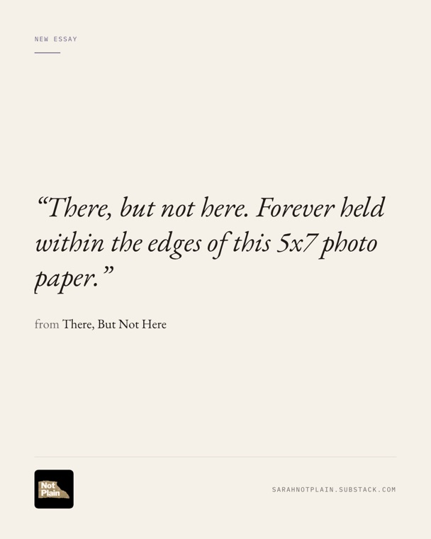
Quote card · day 1Read the caption
“There, but not here. Forever held within the edges of this 5x7 photo paper.”
A man at the pharmacy gives his birth year, and it's close enough to my dad's that I start to wonder what he would look like now. All gray, or just speckled. Whether I'd even recognize him.
He would have turned 62. So I took out the photos I keep hidden in my closet, and found a new kind of grief waiting there.
New essay on Not Plain. Read it at the link in bio.
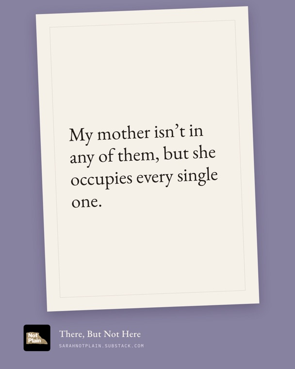
Photo print · day 2Read the caption
“My mother isn’t in any of them, but she occupies every single one.”
My dad holding a birthday cake with the words written in my mother's cursive. Four kids with their arms around him, all smiling. Every picture taken through her lens. And the realization that so many of my memories are really scenes my brain built from photographs.
From There, But Not Here, on Not Plain. Read it at the link in bio.
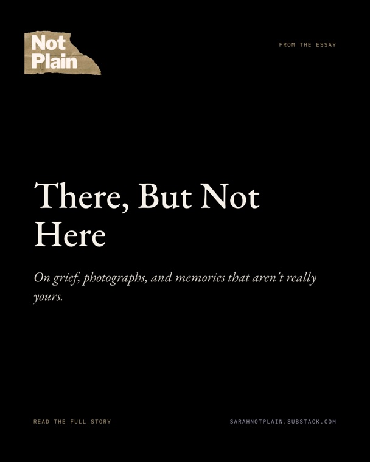
Title card · day 3Read the caption
There, But Not Here.
An essay about the kind of grief that only arrives after years of living without someone. About a stack of 5x7 photos, a birthday my dad didn't get to have, and the mother who was always behind the camera.
From Not Plain. Read it at the link in bio.
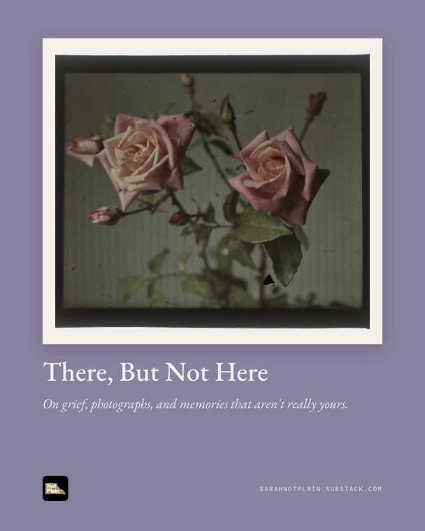
Cover art · day 4Read the caption
There, But Not Here.
Pictures of my mother exist, but they're scattered across Houston, kept by different family members, tucked away in closets where they'll stay. Not thrown away. Just never looked at.
From Not Plain. Read it at the link in bio.
Layouts that fit the writing
Nine looks, so the feed never feels cut and paste
Each post gets the layout that suits its line: art with a quote, a typed manuscript page, a poster, a notebook card. It rotates automatically, so no two posts in a row look the same.
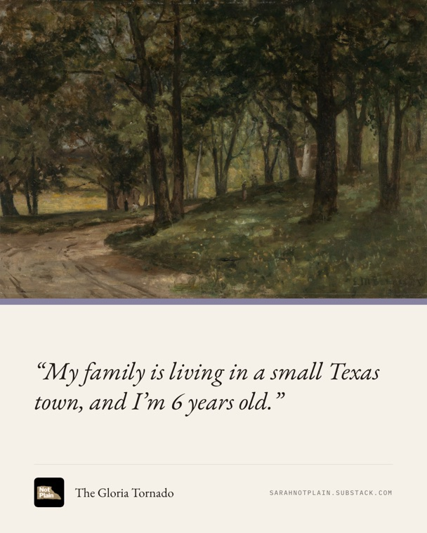
Art + line
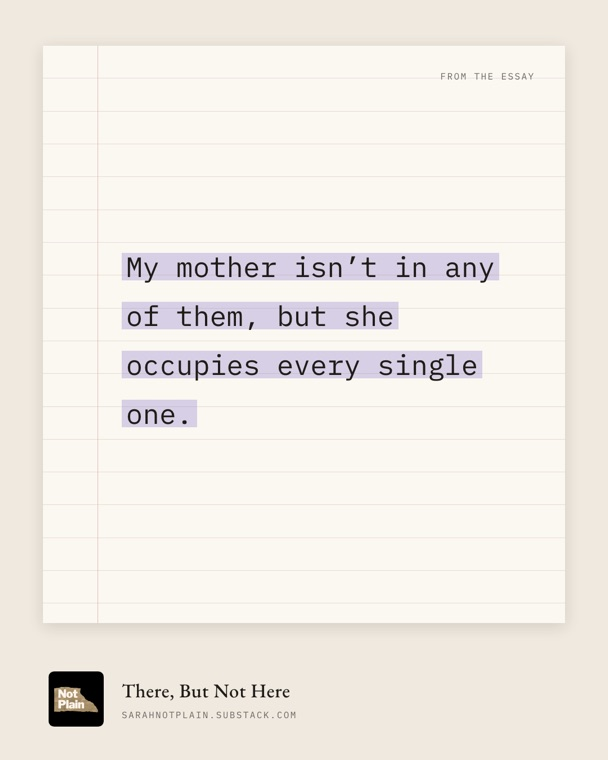
Manuscript page
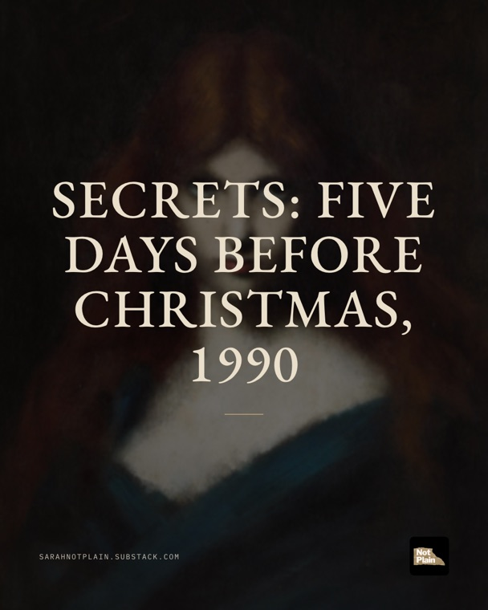
Poster
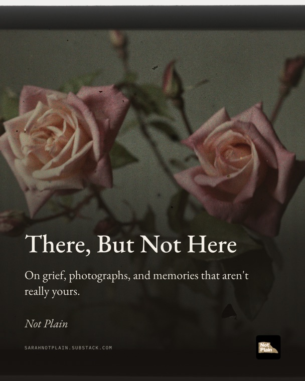
Cover
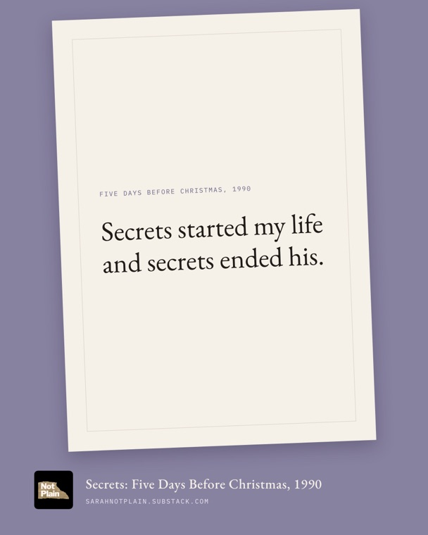
Photo print
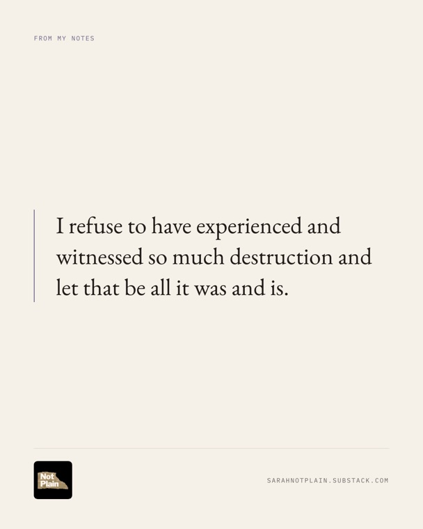
Substack Notes, too
Instagram carousels
A scene people swipe through, not a single quote
Instagram gets carousels built from your own lines. This one, from "Secrets", follows a moment step by step and stops right before the turn, so people want the rest. Every slide is checked word for word against the essay.
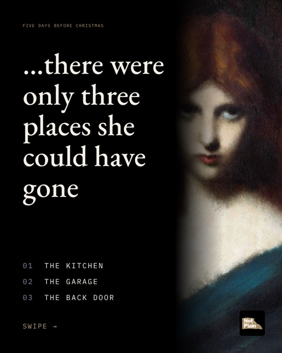
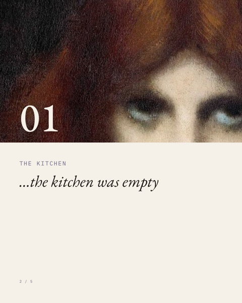
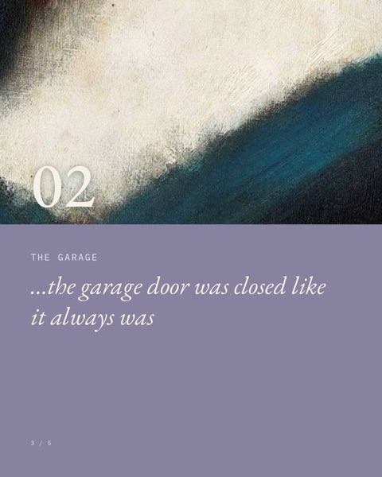
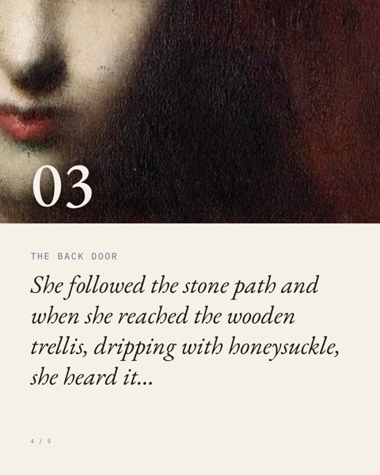
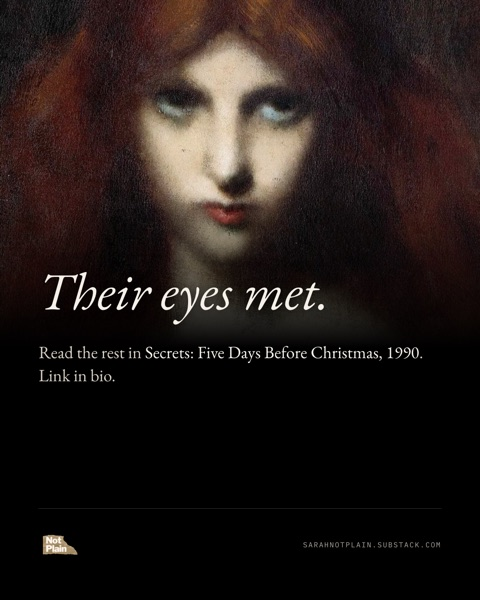
Swipe or scroll sideways to see all five slides.
Your brand, not mine
It takes on your colors and your logo
During setup it reads your Substack's colors and logo, so every post looks like yours, not like mine. Here's the same carousel slide in four different palettes.
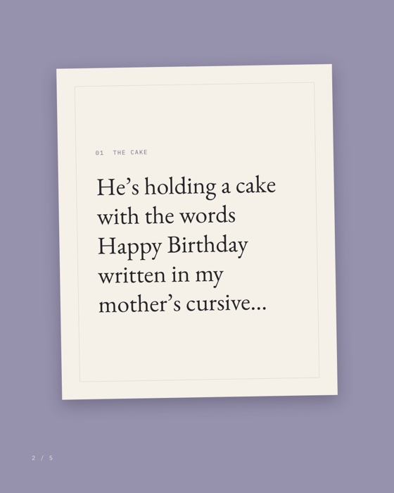
Not Plain's lavender
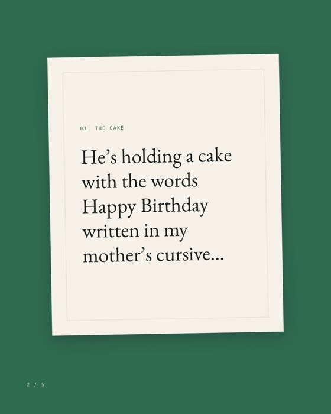
Forest green
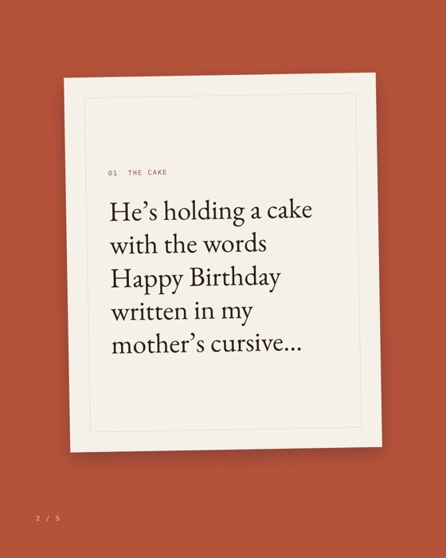
Terracotta
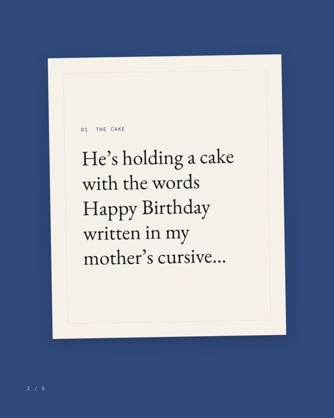
Navy
Your feed, and your approval
A feed that looks designed, not repeated
Nine posts from three essays, the way they line up on Instagram: art, carousels, quotes, a manuscript page, a poster. The system rotates layouts so no two posts in a row look alike.
Every post arrives in Buffer as a draft. You read it, change anything you like, and approve it. Then it goes out once a day, on the schedule you choose. Nothing posts on its own.
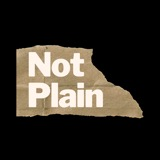
sarahnotplainNot Plain · memoir in progress
How it works
Three steps, and only one of them is yours
You publish on Substack
Write and publish exactly as you do now. Nothing changes about your process.
Drafts appear by morning
A daily check finds your new post and creates up to three branded posts per platform, with captions and a tracked link.
You approve
Open Buffer, read the drafts, tweak anything, and add them to your queue. Nothing publishes on its own.
What's included
Set up with you, in about a week
Image templates in your logo, colors and fonts
A caption guide written in your voice
Up to 3 posts per article, for Instagram, Facebook and Pinterest
Optional posts from your Substack Notes
Link tracking, so Substack shows which platform sends readers
Sample images from your own posts before anything is installed
A 90-minute setup call over screen share
A check-in after your first week
You'll need a Substack, a free Buffer account, a free GitHub account, and a Claude Pro subscription, which runs the daily check.
Two ways to get it
Want this for your Substack?
Do it yourself
The Publish Once kit
$47launches October 13
The same system, ready for your Substack. Open it in the Claude app, type "set me up", and Claude walks you through setup in about an hour: your colors, your voice, Buffer, and the daily schedule.
Before launch, 5 founding testers get it for $15 in exchange for honest feedback. Email me if you'd like one of the spots.
Done with you
I set it up with you
$250beta, first two writers, then $450
I build your templates and caption voice from your Substack, show you samples first, then we install it together on a 90-minute screen share. A week later I check in.